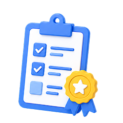

재정데이터분석교육서비스 이용
재정데이터분석 실무 역량을 키우는 교육 서비스
한국재정정보원 재정분석교육센터에서 집합교육·온라인교육 과정을 신청·수강하고 수료증까지 받을 수 있어요.
집합교육 (오프라인)
교육센터 방문 실무 과정
- 재정데이터 분석기획 실무
- 분석·활용 실전 과정
- ChatGPT 활용 분석
온라인교육 (상시)
온라인으로 수강하는 과정
- 예산·결산·집행 데이터 활용
- 생성형 AI 리터러시
- Python 데이터 분석
- Q-GIS 공간분석
수강 관리·수료
나의 강의실에서 관리
- 수강 신청·이력 관리
- 수료증 발급
- 이용안내·FAQ

재정분석교육센터 바로가기
※ 클릭 시 한국재정정보원 재정분석교육센터(edu.openfiscaldata.go.kr)로 연결됩니다.